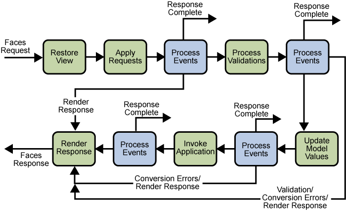
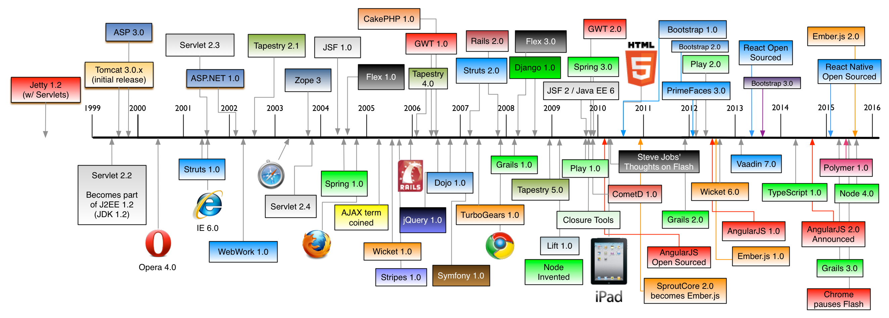
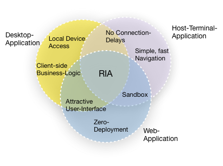
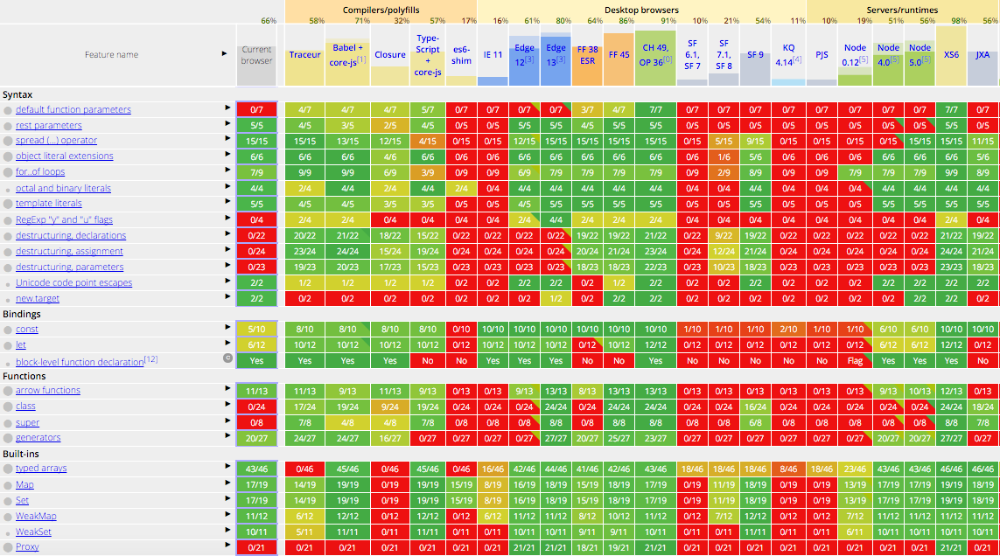
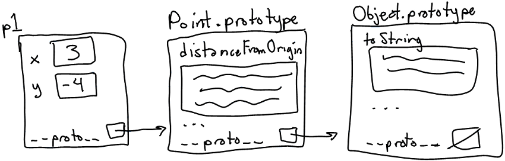
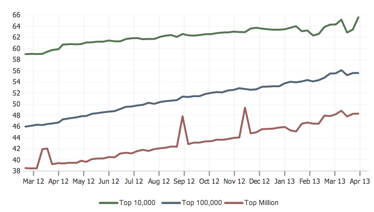
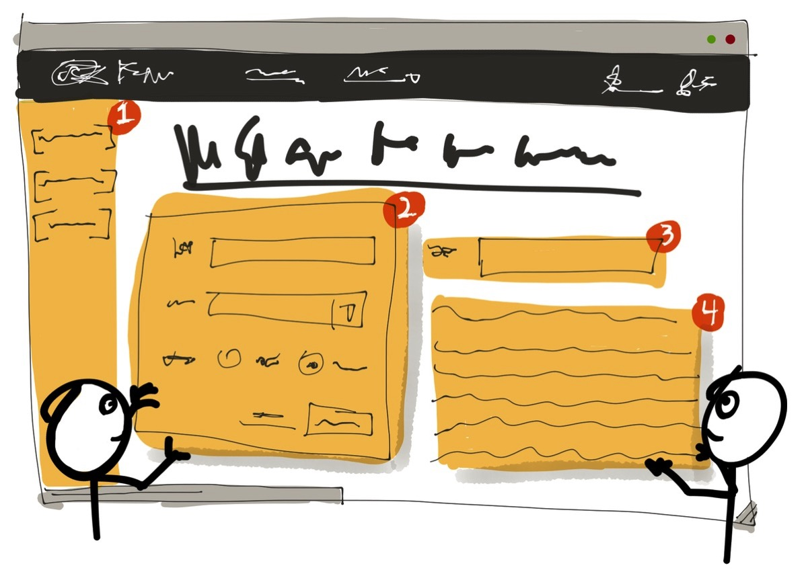
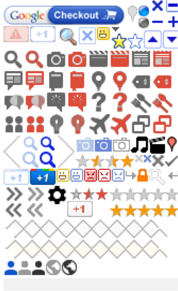
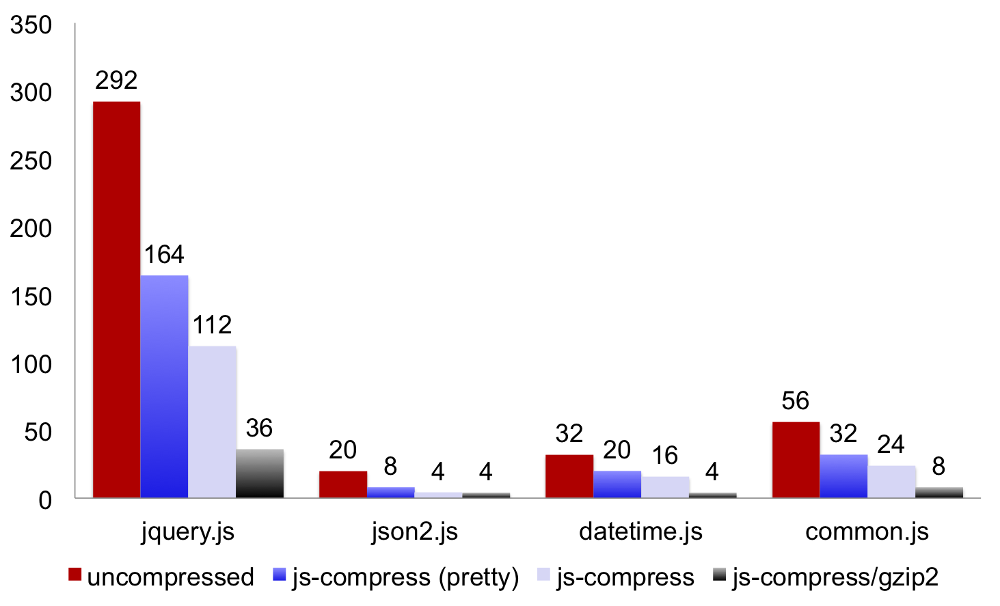

<!doctype html>
<html lang="en">

    <head>
        <meta charset="utf-8">

        <title>183.223 Web Application Engineering & Content Management</title>

        <meta name="description" content="183.223 Web Application Engineering & Content Management">
        <meta name="author" content="Christoph Mayerhofer">

        <meta name="apple-mobile-web-app-capable" content="yes" />
        <meta name="apple-mobile-web-app-status-bar-style" content="black-translucent" />

        <meta name="viewport" content="width=device-width, initial-scale=1.0, maximum-scale=1.0, user-scalable=no">

        <link rel="stylesheet" href="css/reveal.css">
        <link rel="stylesheet" href="css/simple.css" id="theme">

        <!-- For syntax highlighting -->
        <link rel="stylesheet" href="lib/css/zenburn.css">

        <!-- If the query includes 'print-pdf', use the PDF print sheet -->
        <script>
            document.write( '<link rel="stylesheet" href="css/print/' + ( window.location.search.match( /print-pdf/gi ) ? 'pdf' : 'paper' ) + '.css" type="text/css" media="print">' );
        </script>

        <!--[if lt IE 9]>
        <script src="lib/js/html5shiv.js"></script>
        <![endif]-->
    </head>

    <body>

        <div class="reveal">

            <!-- Any section element inside of this container is displayed as a slide -->
            <div class="slides">

                <section>
                    

                    <h3>183.223 Web Application Engineering<br> & Content Management</h3>
                    <p>
                        <small>Contact:  <a href="mailto:waecm@inso.tuwien.ac.at">waecm@inso.tuwien.ac.at</a></small>
                    </p>
                </section>

                <section>
                    <section>
                            <h2>Web-Frameworks</h2>

                            <ul style="font-size:85%">
                                <li>Provide libraries for database access (ORM), templating, user-interface widgets, form validation, session management, data binding, I18N, testing, …</li>
                                <li>Classic Web-Frameworks: Request-Response-Cycles</li>
                                <li>Since ~2002</li>
                                <ul>
                                    <li>Microsoft ASP.NET (Active Server Pages) since 2002</li>
                                    <li>Java Server Faces (JSF) since 2004</li>
                                    <li>Ruby on Rails since 2006</li>
                                    <li>JBoss Seam since 2006</li>
                                </ul>
                            </ul>

                            
                    </section>

                    <section>
                            <h2>Web-Frameworks</h2>

                            <ul>
                                <li>Advantages</li>
                                <ul>
                                    <li>Development speed</li>
                                    <li>Code reuse (from Framework libraries)</li>
                                    <li>Same output from different developers</li>
                                    <li>Tested (security)</li>
                                    <li>User community</li>
                                </ul>
                            </ul>
                    </section>

                    <section>
                        <h2>History</h2>
                        
                        <small><a href="https://github.com/mraible/history-of-web-frameworks-timeline">https://github.com/mraible/history-of-web-frameworks-timeline</a></small>
                    </section>
                </section>

                <section>
                    <section>
                            <h2>Rich Internet Applications - Features</h2>

                            <ul style="font-size:85%">
                                <li>Rich interactions<br>(for example drag & drop)</li>
                                <li>Access to the local file system</li>
                                <li>Local browser database</li>
                                <li>Client-side business code</li>
                                <li>Client-side validation</li>
                                <li>Animations</li>
                                <li>Visual feedback</li>
                                <li>Data encryption</li>
                                <li>Zero-downtime deployment</li>
                                <li>Offline applications</li>
                                <li>Multimedia</li>
                            </ul>

                            
                    </section>

                    <section data-markdown>
                        <script type="text/template">
                            ## Rich Internet Applications - Trends

                            * HTML5 is the leading standard for RIAs
                            * Flash & Silverlight
                              * Adobe announces to more aggressively contribute to HTML5 (on mobile devices)<br>
                                <small><http://blogs.adobe.com/conversations/2011/11/flash-focus.html></small>
                              * Windows 8 applications with JavaScript and HTML5<br>
                                <small><http://www.zdnet.com/blog/microsoft/will-there-be-a-silverlight-6-and-does-it-matter/11180></small>
                              * Apple: Thoughts on Flash<br>
                                <small><http://www.apple.com/hotnews/thoughts-on-flash/></small>
                            * More and more JavaScript based web frameworks
                            * Browser (speed) war
                            * New HTML5 browser features on-the-fly
                        </script>
                    </section>
                </section>

                <section>
                    <section>
                            <h2>Web Standards</h2>
                            
                    </section>

                    <section>
                        <h2>WHATWG vs. W3C</h2>

                        <table>
                            <tr>
                                <td>
                                    <ul>
                                        <li>WHATWG: Web Hypertext Applications Technology Working Group</li>
                                        <li>Public mailinglist announced 2004 by Opera, Mozilla, Apple</li>
                                        <li>Unofficial, open collaboration of browser manufacturers and interested parties <span style="font-size:80%">(Ian Hickson/Google, head of WHATWG, editor)</span></li>
                                        <li>HTML living standard (continuous integration of new features as required)</li>
                                        <li>Focus on rich internet applications, accelerate development of web standards</li>
                                    </ul>
                                </td>
                                <td style="vertical-align:top">
                                    <ul>
                                        <li>W3C: World Wide Web Consortium</li>
                                        <li>Founded 1994 by Tim Berners-Lee</li>
                                        <li>About ~400 members</li>
                                        <li>Snapshot of current HTML standards, final specification until 2014.</li>
                                        <li>Draft-Draft-Draft-Snapshot model</li>
                                        <li>Focus on standardization for all manufacturers, W3C process proves interoperability</li>
                                    </ul>
                                </td>
                            </tr>
                        </table>

                    </section>

                    <section data-markdown>
                        <script type="text/template">
                            ## Example: Web Notifications

                            * May 2010: Chrome 5 supports prefexed version of the Notification API
                            * March 2011: First W3C Working Draft
                            * May 2012: First WHATWG Draft
                            * June 2012: W3C Working Draft #14
                            * July 2012: Safari 6 adds Web Notification API
                            * September 2012: Chrome 22 supports full Web Notification API
                            * May 2013: Spec merged from WHATWG to W3C
                            * June 2013: Firefox 22 supports full Web Notification API
                            * August 2013: Spec merged from WHATWG to W3C
                            * September 2013: W3C Last Call Working Draft

                        </script>
                    </section>
                </section>

                <section>
                    <section>
                        <h2>JavaScript</h2>
                        <div style="float:left; width: 70%;">
                        <ul>
                            <li>The world&#039;s most misunderstood programming language<br>
                                <small><a>http://javascript.crockford.com/javascript.html</a></small>
                            </li>
                            <li>
                                JavaScript is the web&#039;s "virtual machine"<br>
                                <blockquote>We had always thought that Java&#039;s JVM would be the VM of the web, but it turns out that it's JavaScript. JavaScript's parser does a more efficient job... than the JVM&#039;s bytecode verifier.</blockquote>
                                <p class="attribution">&mdash; <a href="http://www.hanselman.com/blog/JavaScriptIsAssemblyLanguageForTheWebPart2MadnessOrJustInsanity.aspx">Doug Crockford</a></p>
                            </li>
                        </ul>
                        </div>
                        <div style="float: left; width: 30%;">
                            
                        </div>
                        <div style="clear: both;"/>
                    </section>

                    <section data-markdown>
                        <script type="text/template">
                            ## JavaScript supports ...

                            * First-class functions and Closures
                            * Prototype-oriented Inheritance (OOP)
                            * Modules, simulated with objects
                            * Exception handling (try/catch)<br><br>

                            * ... But also bad design decisions made in the early days of JavaScript<br>(for example global variables)
                        </script>
                    </section>

                    <section>
                        <h2>JavaScript - The Bad Parts</h2>

                        <ul>
                            <li>Type Coercion: Rules for implicit type conversion</li>
                        </ul>
                            <pre><code>
"1" == true // -> true
"42" == true // -> false

1. true -> 1
2. "42" -> 42
3. 1 != 42
                            </code></pre>
                        <ul>
                            <li><code>this</code>: Binding based on how a function is called</li>
                            <ul>
                                <li>Function call: <code>foo()</code></li>
                                <li>Object literals: <code>obj.foo()</code></li>
                                <li>Constructor: <code>new Foo()</code></li>
                                <li><code>.call(), .apply(), .bind()</code></li>
                            </ul>
                        </ul>
                    </section>

                    <section>
                        <h2>JavaScript - The Bad Parts</h2>

                        <ul>
                            <li>Function scope: Variables are visible everywhere in the function</li>
                            <li>Variable Hoisting: Variable declarations are processed before any code is executed</li>
                        </ul>
                            <pre><code>
function foo() {
    x = 2; // x, y and z already declared

    for (var i = 0; i < x; i++) {
        var z = 3;
    }

    var x;
}
                            </code></pre>
                    </section>
                </section>

                <section data-markdown>
                    <script type="text/template">
                        ## JavaScript - Target Platform

                        * "The assembly language of the web"
                        * JavaScript is ubiquitous
                        * It&#039;s fast and getting faster
                        * JavaScript is as low-level as a web programming language goes
                        * You can craft it manually or you can target it by compiling from another language
                        * Type checking: Google Closure Compiler
                        * Type checking and OOP: Typescript
                        * Cross-compilation: CoffeeScript, GWT, Google Dart
                            * Higher-level languages compiled down to JavaScript
                        * <https://github.com/jashkenas/coffee-script/wiki/List-of-languages-that-compile-to-JS>
                    </script>
                </section>

                <section>
                    <section data-markdown>
                        <script type="text/template">
                            ## JSON
                            * First specified by Douglas Crockford in 2001
                            * Language-Independent
                            * Not a subset of JavaScript (because of some allowed special characters)
                            * Standardized with ECMA-404 Standard

                            * Used for Client-Server and Server-Server Communication
                              * AJAJ (Asynchronous JavaScript and JSON)
                              * MIME-Type "application/json"
                              * REST
                              * JSON-RPC

                            * Other Use-Cases
                              * Configuration files (YAML)
                              * JSON Schema
                              * GeoJSON (Google Maps API)
                              * JWT
                        </script>
                    </section>

                    <section data-markdown>
                        <script type="text/template">
                            ## JWT - JSON Web Token

                            * Header (required)
                            <pre><code>{
    "typ": "JWT",
    "alg": "RS256" // SHA-256 + RSA
}
                            </code></pre>
                            * Payload (required)
                            <pre><code>{
  "sub": "1234567890", // subject
  "iss": "", // issuer
  "name": "John Doe",
  "roles": ["clerk"],
  "exp": 1458077395, // expiration time
}
                            </code></pre>
                            * Signature (Message Authentication Code, optional):
                              * Base64(Header) + "." + Base64(Payload)
                              * Hashed and Encrypted
                        </script>
                    </section>

                    <section data-markdown>
                        <script type="text/template">
                            ## JWT - JSON Web Token

                            * RFC 7519
                            * Can be used to pass authentication and authorization infos (claims) between an identity provider and a service provider
                            * Allows stateless backends
                            * Client is responsible for storing the JWT (Mobile Apps, Web Apps)
                            * JWT is included in each AJAX-Request
                            * Can be used with CORS
                        </script>
                    </section>
                </section>

                <section>
                    <section data-markdown>
                        <script type="text/template">
                            ## JavaScript - ECMAScript 6 (ES6)

                            * Finalized in June 2015 (ECMAScript 2015)
                            * http://es6-features.org
                            * Inheritance
                            * Modules
                            * Default parameters, rest parameters
                            * Template strings
                            * Iterators and generator functions
                            * ...
                        </script>
                    </section>

                    <section data-markdown>
                        <script type="text/template">
                            ## Current ES6 Browser Support

                            
                            <small><https://kangax.github.io/compat-table/es6/></small>
                        </script>
                    </section>

                    <section data-markdown>
                        <script type="text/template">
                            ## ES6 -> ES5 Transpilers

                            * Transpiler = Source-2-Source Compiler
                            * Closure Compiler
                            * Traceur Compiler
                            * Babel
                        </script>
                    </section>

                    <section>
                        <h2>Transpiler Example: Inheritance</h2>
                        How prototypical inheritance works in JavaScript:

                        
                    </section>

                    <section>
                        <h2>Transpiler Example: Inheritance</h2>
                        <div style="width: 50%; float: left">
                            ES5
                            <pre>
                                <code>
    function Vehicle() {};
    Vehicle.prototype.toString = function() {
        console.log(this.name);
    }

    function Car() {};

    // create prototype chain
    function F() {};
    F.prototype = Vehicle;
    Car.prototype = new F();

    var c = new Car();
    c.toString();
    // c.__proto__ -> Vehicle.prototype
                                </code>
                            </pre>
                        </div>
                        <div style="width: 50%; float: right">
                            ES6
                            <pre>
                                <code>
    class Vehicle {
        toString() {
            console.log(this.name);
        }
    }

    class Car extends Vehicle {}
    var c = new Car();
    c.toString();
                                </code>
                            </pre>
                        </div>
                    </section>

                    <section>
                        <h2>Transpiler Example: Inheritance</h2>
                        Transpiled output of Traceur:
                        <pre>
                            <code>
    $traceurRuntime.ModuleStore.getAnonymousModule(function() {
      "use strict";
      var Vehicle = function() {
        function Vehicle() {}
        return ($traceurRuntime.createClass)(Vehicle, {toString: function() {
            console.log(this.name);
          }}, {});
      }();
      var Car = function($__super) {
        function Car() {
          $traceurRuntime.superConstructor(Car).apply(this, arguments);
        }
        return ($traceurRuntime.createClass)(Car, {}, {}, $__super);
      }(Vehicle);
      var c = new Car();
      c.toString();
      return {};
    });
    //# sourceMappingURL=traceured.js.map
                            </code>
                        </pre>
                        ... Source Maps come to rescue
                    </section>
                </section>

                <section>
                    <section data-markdown>
                        <script type="text/template">
                            ## How SPAs work - the bootstrap process

                            * Single HTML page, containing:
                            * HTML header and declarations
                            * HTML body containing the page header and footer
                            * Feature detection code (JavaScript, cookies)
                            * JavaScript bootstrap code
                            * The HTML page loads the CSS and JavaScript resources, which contains the application code
                            * A JavaScript callback function is the entry-point to render the application
                        </script>
                    </section>

                    <section data-markdown>
                        <script type="text/template">
                            ## Pros of plain JavaScript<br> web-apps

                            * Strong seperation of frontend and backend (necessarily)
                            * Frontend and backend can be developed independenly
                            * “Headless” testing of the backend
                            * Reuse of web-services (for other distribution channels)
                            * Development in the interpreter language of the browser (no abstraction, no cross-compiles)
                            * High learning curve (JavaScript per se)
                            * Numerous existing JavaScript libraries
                            * All features of HTML/JavaScript are available, no barriers because of frameworks
                            * HTML is rendered in browser (DOM manipulation) -> easy to debug and deploy (static files – only a browser referesh away :)
                        </script>
                    </section>

                    <section>
                        <h2>Develop-build-deploy cycles</h2>
                        
                    </section>

                    <section data-markdown>
                        <script type="text/template">
                            ## Develop-build-deploy cycles

                            * Building and deploying takes a lot of time, especially for developers where the build is a synchronous task
                            * A lot of frameworks with inconvenient and long-running build and deployment jobs exist
                            * This results in less development speed and loss in productivity
                            * With HTML/JavaScript the build/deployment task is to press the  reload button in the browser
                            * No byte compilation necessary
                            * No build artefacts necessary
                            * No restart of the application necessary
                        </script>
                    </section>
                </section>

                <section>
                    <section data-markdown>
                        <script type="text/template">
                            ## jQuery

                            * Developed by John Resig<br><small><http://ejohn.org></small>
                            * About ~30 KB compressed
                            * Large community<br><small><http://trends.builtwith.com/javascript/JQuery></small>
                            * De facto standard in web development
                            * Extendable with plug-ins
                            * jQuery object: $
                            * Method chaining<br><small><http://importantshock.wordpress.com/2009/01/18/jquery-is-a-monad/></small>
                            * Selectors, attributes, traversing, manipulation, CSS, events, effects, ajax, utilities
                        </script>
                    </section>

                    <section>
                        <h2>jQuery Usage-Trends</h2>
                        
                    </section>

                    <section>
                        <h2>jQuery - Code Example</h2>
                        <pre>
                            <code>
$(&quot;#divTest2:visible&quot;)
    .text(&quot;Hello World&quot;)
    .removeClass(&quot;blue&quot;)
    .addClass(&quot;bold&quot;)
    .css(&quot;background-color&quot;, &quot;red&quot;)
    .click(function() {
        alert(&quot;Handler for .click() called.&quot;);
    })
    .wrap(&quot;&lt;div&gt;&quot;);
                                 </code>
                        </pre>
                    </section>
                </section>

                <section>
                    <section>
                        <h2>Today: Component-oriented Frameworks</h2>

                        <ul>
                            <li>HTML was not designed to develop components</li>
                            <li>Object-oriented Model: Behaviour, Isolation, Interface, Reuse</li>
                            <li>Angular, Ember, Backbone, React, Web Components (Polymer)</li>
                        </ul>

                        
                    </section>

                    <section>
                        <h2>Example: Web Components</h2>
                        <pre><code>
&lt;dom-module id="p-form-input-text"&gt;
    &lt;template&gt;
        &lt;div class="form-group form-label-input"&gt;
            &lt;label class="control-label" for="input"&gt;[[label]]&lt;/label&gt;
            &lt;input id="input" name="input" type="[[type]]" disabled="[[disabled]]"
                   required="[[required]]" maxlength="[[maxlength]]" value="{{value}}"/&gt;
        &lt;/div&gt;
    &lt;/template&gt;

    &lt;script&gt;
        (function() {
            Polymer({
                is: 'p-form-input-text',
                properties: {
                    type: String,
                    required: Boolean,
                    maxlength: Number,
                    value: Object,
                    disabled: Boolean
                },
                ready: function() {
                    this.$.input.value = "foo";
                }
            });
        })();
    &lt;/script&gt;
&lt;/dom-module&gt;

&lt;p-form-input-text label="Nachname" required="true" maxlength="100"
                   value="{{person.nachname}}"/&gt;
               </code></pre>
                    </section>
                </section>

                <section>
                    <section data-markdown>
                        <script type="text/template">
                            ## Web application performance

                            * Books you must read:
                                * Steve Souders: High Performance Web Sites, O‘Reilly, 2007.
                                * Steve Souders: Even Faster Web Sites, O‘Reilly, 2009.
                            * Slow sites:
                                * Decreased revenues
                                * Frustrated users
                                * Negative brand perceptions
                            * Basic rules:
                                * Make fewer HTTP requests
                                * Reduce the content-size
                        </script>
                    </section>

                    <section data-markdown>
                        <script type="text/template">
                            ## Rule 1: Make fewer HTTP requests

                            * Very important!!!
                            * Take advantage of proxy and browser caches - HTTP/1.1 supports additional caching directives
                            * Use max 6 requests for the initial page load - HTTP/1.1 persistent connections
                            * Use image sprites or font icons
                            * Use inlined resources
                            * Base64 encoded images
                            * HTML-embedded JavaScript and CSS
                            * Combine JavaScript und CSS files
                            * Avoid HTTP redirects
                            * Offline apps
                        </script>
                    </section>

                    <section data-markdown>
                        <script type="text/template">
                            ## Browser caching

                            * Caching directives in HTTP/1.1<br><small><http://www.w3.org/Protocols/rfc2616/rfc2616-sec13.html></small>
                            * Expiration model [§13.2]: Avoid requests to the server
                                * Expires [§14.21]
                                * Cache-Control max-age [§14.9]
                            * Validation model [§13.3]: Revalidate with server
                                * Conditional requests
                                * Last-modified [§14.29] (If-Modified-Since, If-Unmodified-Since)
                                * Entity tag [§14.19] (ETag – If-Match, If-None-Match)
                        </script>
                    </section>

                    <section>
                        <h2>Image sprites</h2>

                        

                        <ul>
                            <li>A tiling of regular polygons (in two dimensions)[…]<br>is called a tessellation<br><small><a href="http://mathworld.wolfram.com/Tessellation.html">http://mathworld.wolfram.com/Tessellation.html</a></small></li>
                            <li>Combines several images to a single image</li>
                            <li>Only a single HTTP request is necessary</li>
                            <li>Browser must not parse and render each image</li>
                            <li>2D Strip Packing Problem (SPP)<br><small><a href="http://dip.sun.ac.za/~vuuren/repositories/levelpaper/spp%5B1%5D.htm">http://dip.sun.ac.za/~vuuren/repositories/levelpaper/spp%5B1%5D.htm</a></small></li>
                            <li>WebSpriteGenerator – Colour-Groups<br><small><a href="http://westhoffswelt.de/projects/web-sprite-generator.html">http://westhoffswelt.de/projects/web-sprite-generator.html</a></small></li>
                        </ul>
                    </section>

                    <section data-markdown>
                        <script type="text/template">
                            ## Rule 2: Minimize the content size

                            * Reduce the size of HTML, JavaScript and CSS files
                            * CSS and JavaScript minification/compression
                            * Accept Gzip/deflate content encoding
                            * Optimize images
                                * <code>$ pngcrush --brute image.png output.png</code>
                                * <code>$ jpegtran --optimize image.jpg > output.jpg</code>
                            * Reduce the size of the HTTP headers, because they are delivered uncompressed (for example session cookies)
                        </script>
                    </section>

                    <section>
                        <h2>JavaScript compression (1)</h2>

                        

                        <ul>
                            <li>Deployment of the source-code without<br>comments</li>
                            <li>Find syntax errors during development</li>
                            <li>Identify potentially buggy code patterns<br>(browser specific)</li>
                            <li>Code optimizations are possible</li>
                            <li>Licence headers must be untouched</li>
                            <li>Sourcecode reduction > 50%</li>
                        </ul>
                    </section>

                    <section data-markdown>
                        <script type="text/template">
                            ## JavaScript obfuscation (2)

                            * Obufscation = make it unreadable, hide the details
                            * Security- and copyright-concern
                            * Protects your code
                            * Remove sourcecode comments, whitespaces, line breaks
                            * Rename (local/global) variable- and function-names
                            * Dead code removal, add dummy-statements
                            * JavaScript compressors: JSMin, Closure Compiler, YUI Compressor, ...
                            <small>
                                <https://developers.google.com/closure/compiler/><br>
                                <http://developer.yahoo.com/yui/compressor/><br>
                                <http://crockford.com/javascript/jsmin>
                            </small>

                            <small><code><span style="font-size:12px">...function str(aq,ar){var i,k,v,length,as=ak,at,au=ar[aq];if(au && typeof au === 'object' && typeof au.toJSON === 'function'){au=au.toJSON(aq);} if(typeof ao === 'function'){au=ao.call(ar,aq,au);} switch(typeof au){case 'string': {return quote(au);} case 'number': {return (isFinite(au) ? String(au) : 'null');} case 'boolean': {} case 'null': {return String(au);} case 'object': {if(! au){return 'null';} ak+=am;at=[];if(Object.prototype.toString.apply(au) === '[object Array]'){length=au.length;for(i=0;i < length;i+=1){at[i]=str(i,au) || 'null';}v=(at.length === 0 ? '[]' : (ak ? '[\n' + ak + at.join(',\n' + ak) + '\n' + as + ']' : '[' + at.join(',') + ']'));ak=as;return v;} if(ao && typeof ao === 'object'){length=ao.length;for(i=0;i < length;i+=1){k=ao[i];if(typeof k === 'string'){v=str(k,au);if(v){at.push(quote(k) + ((ak ? ': ' : ':')) + v);} } }} else {for(k in...</span></code></small>
                        </script>
                    </section>

                    <section>
                        <h2>Content-size minimization</h2>
                        
                    </section>
                </section>

                <!-- <section data-markdown>
                    <script type="text/template">
                        ## Advanced topics

                        * DOM-Storage<br><small>
                            <https://developer.mozilla.org/en/DOM/Storage><br>
                            <http://www.w3.org/TR/webstorage></small>
                        * sessionStorage
                        * localStorage
                        * IE7: userData behaviour
                        * „jQuery jStorage“ (plug-in)
                        * HTML5 History API – not available in all browser!
                        * „jQuery hashchange event“ (plug-in)
                        * WAI Compliance
                        * Web Content Accessibility Guidelines are fuzzy
                        * Some basic rules to make dynamic content WAI compliant
                        * DOM-tree must be compliant – ARIA tags
                    </script>
                </section> -->

                <section data-markdown>
                    <script type="text/template">
                        ## Literature

                        * D. Crockford: JavaScript: The Good Parts, O‘Reilly, 2008.
                        * J. Resig: JavaScript Technics, Apress, 2006.
                        * J. Resig: Secrets of a JavaScript Ninja, Manning, 2012.
                        * N. Zakas: High Performance JavaScript, O‘Reilly, 2010.
                        * A. MacCaw: JavaScript Web Applications, O‘Reilly, 2011.
                        * B. Bibeault, Y. Katz: jQuery in Action, Manning, 2010.
                        * jQuery Experts: jQuery Cookbook, O‘Reilly, 2010.
                    </script>
                </section>

                <section>
                    <h1>Questions?</h1>
                </section>

            </div>

        </div>

        <script src="lib/js/head.min.js"></script>
        <script src="js/reveal.js"></script>

        <script>

            // Full list of configuration options available here:
            // https://github.com/hakimel/reveal.js#configuration
            Reveal.initialize({
                controls: true,
                progress: true,
                history: true,
                center: true,

                theme: Reveal.getQueryHash().theme, // available themes are in /css/theme
                transition: Reveal.getQueryHash().transition || 'default', // default/cube/page/concave/zoom/linear/fade/none

                // Optional libraries used to extend on reveal.js
                dependencies: [
                    { src: 'lib/js/classList.js', condition: function() { return !document.body.classList; } },
                    { src: 'plugin/markdown/showdown.js', condition: function() { return !!document.querySelector( '[data-markdown]' ); } },
                    { src: 'plugin/markdown/markdown.js', condition: function() { return !!document.querySelector( '[data-markdown]' ); } },
                    { src: 'plugin/highlight/highlight.js', async: true, callback: function() { hljs.initHighlightingOnLoad(); } },
                    { src: 'plugin/notes/notes.js', async: true, condition: function() { return !!document.body.classList; } }
                ]
            });

        </script>

    </body>
</html>
